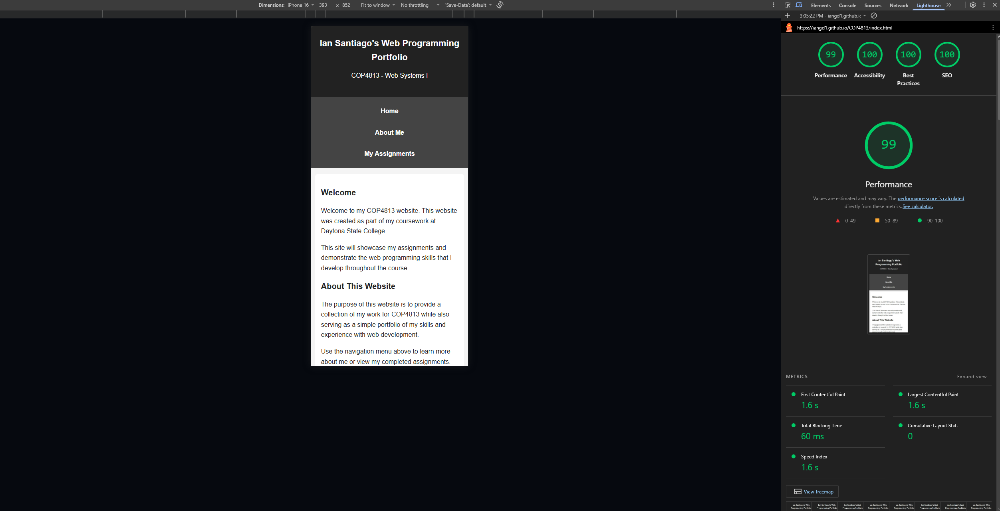
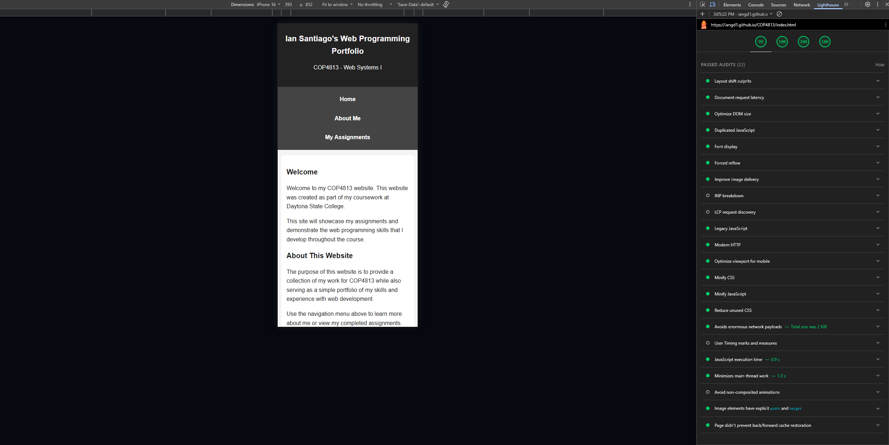
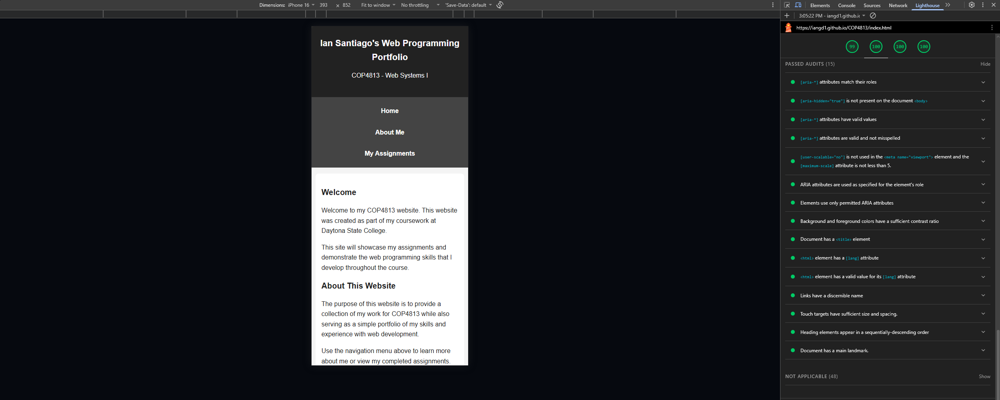
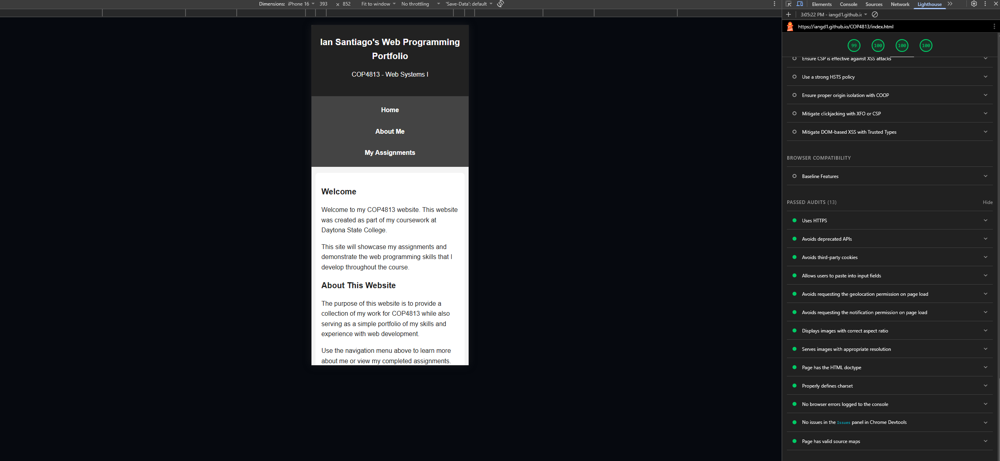
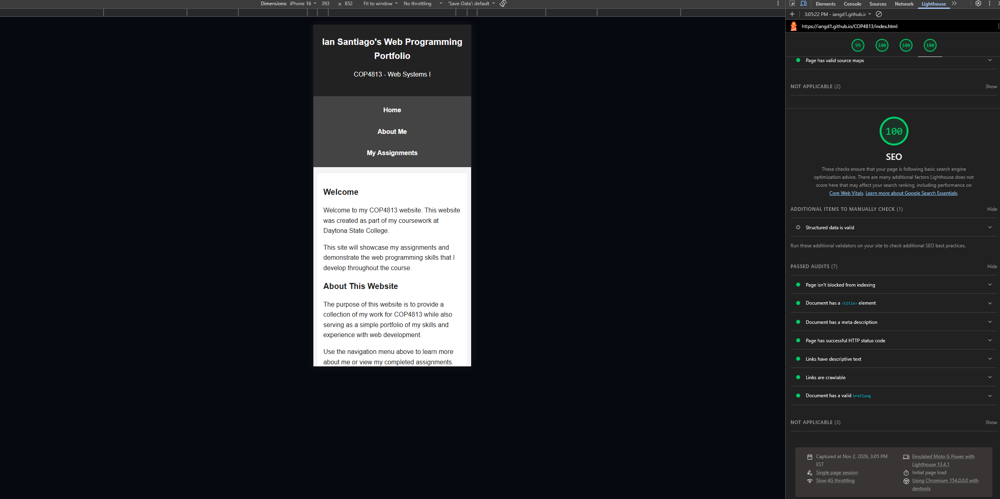

Introduction
The purpose of this assignment was to make my website mobile-friendly and test its accessibility, performance, best practices, and SEO using Google Lighthouse.
I updated the CSS of my existing website to improve its appearance and usability on smaller screens. The responsive design allows the website to adjust to different screen sizes while keeping the same navigation menu and features available on desktop and mobile devices.
I tested the website using Opera's built-in developer tools and mobile device emulation, including different iPhone and Android screen sizes.
Mobile Compatibility
The homepage was tested using mobile device emulation. The navigation menu, images, and page content displayed correctly on smaller screens. The layout adjusted to different screen widths without requiring a separate mobile webpage.
Google Lighthouse Overall Results
I used Google Lighthouse in Navigation mode with the Mobile device setting enabled. The following results were obtained:
| Category | Score |
|---|---|
| Performance | 99 / 100 |
| Accessibility | 100 / 100 |
| Best Practices | 100 / 100 |
| SEO | 100 / 100 |
Overall Lighthouse Screenshot

Performance Analysis
The website received a performance score of 99 out of 100. This indicates that the page loads quickly and performs very well on mobile devices. The results show that the website has very little blocking time and no layout shifting during loading.

Accessibility Analysis
The website received a perfect accessibility score of 100 out of 100. This indicates that the page follows accessibility practices that help make its content easier for users to access and navigate.

Best Practices Analysis
The website received a perfect best practices score of 100 out of 100. This indicates that the website passed the best practices checks performed by Lighthouse.

SEO Analysis
The website received a perfect SEO score of 100 out of 100. This indicates that the page follows the search engine optimization checks included in Lighthouse.

Conclusion
Overall, the Lighthouse analysis showed that the website performs very well in all four categories. The mobile version maintains the same features and navigation as the desktop version while adjusting the layout for smaller screens.
The final Lighthouse scores were 99 for Performance and 100 for Accessibility, Best Practices, and SEO. These results demonstrate that the website is responsive, accessible, and follows modern web development practices.